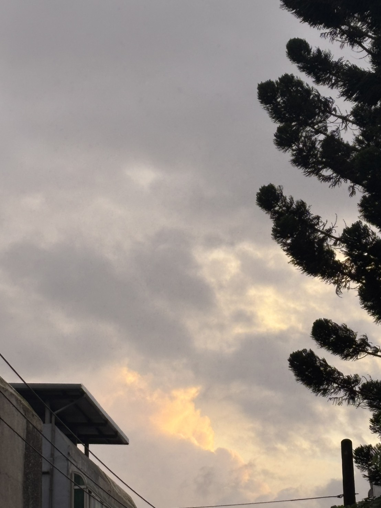
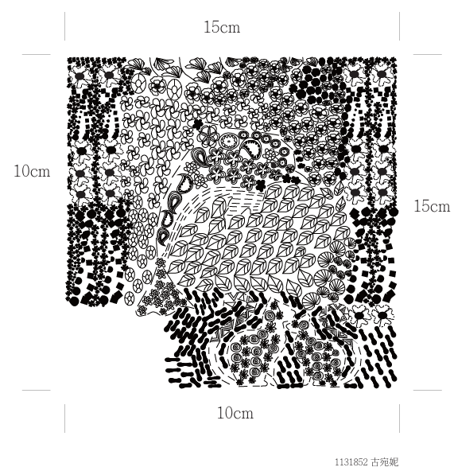
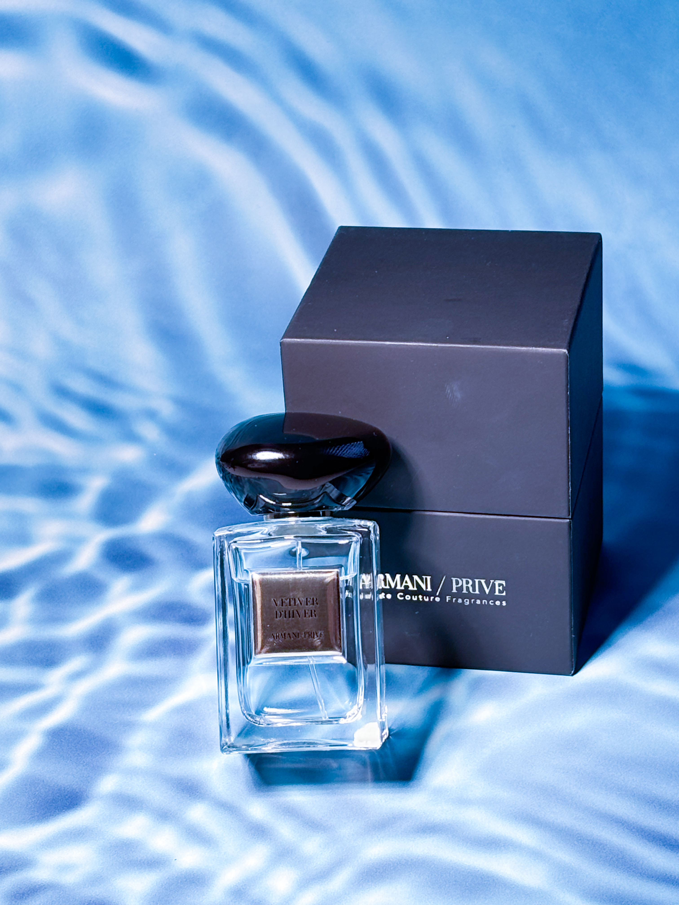

設計工具
- Photoshop
- Illustrator
- Lightroom
- Premiere Pro
關於我

我目前就讀元智大學資訊傳播學系，持續學習影像創作、平面設計、數位媒體應用。喜歡透過影像記錄生活，將日常中的美好與情感轉化為能打動人心的作品，也對設計、品牌視覺與數位內容充滿熱情，結合創意與美感，創造兼具實用與影響的作品。
在課程與團隊專案中，我經常負責企劃發想、腳本撰寫、視覺設計、影像拍攝、影片剪輯及網站前端製作，並與組員共同規劃專案方向。同時也參與紀錄片拍攝，透過田野調查、人物訪談及資料蒐集，深入理解故事背景，轉化為行銷與企劃的核心內容。
為了提升作品品質，我持續精進 Photoshop、Illustrator、Lightroom、Premiere Pro 等工具與技術，並將影像與設計整合運用。在專案執行過程中，我重視團隊溝通與細節規劃，從前期企劃、拍攝執行到後期剪輯及視覺設計，都會反覆調整與優化，希望作品能清楚傳達理念與情感。
透過多次專案實作，我培養了企劃發想、視覺設計、影像製作及跨領域整合能力，也提升了溝通協調、問題解決與團隊合作能力。希望未來持續結合創意、設計與影像，透過具有溫度的視覺內容與良好的使用者體驗，創造兼具美感、故事性與影響力的作品，為團隊與品牌帶來更多價值。
技能
代表作品

作品理念：以海與人的相遇為主題，透過線條、構圖與色彩，將情感與想像轉成有故事感的插畫作品。
工作內容：插畫構圖、色彩設計與視覺呈現。
作品理念：以人物情緒與情境張力為核心，透過鏡頭與節奏讓角色的內在狀態更有層次。
工作內容：擔任場記，負責現場流程與拍攝細節協調。
作品理念：聚焦日常中的人與人互動，透過生活細節和真實情感，讓紀錄片帶有溫度與觀察力。
工作內容：參與外訪、訪談與撰稿，整理故事內容與敘事脈絡。
作品理念：以陪伴與支持為主軸，記錄人與人之間溫柔而持續的連結與影響。
工作內容：參與蒲光計畫相關外訪與撰稿，並獲公益傳播獎肯定。

作品理念：以自然光線與鮮明色溫，營造出夏日熱烈、明亮且帶有情緒溫度的畫面感。
工作內容：Lightroom 調色、色彩平衡與影像質感精修。

作品理念：以柔和、低飽和的色調，呈現安靜與細緻的情緒，讓畫面帶有時間與生活的餘韻。
工作內容：Lightroom 調色、影像氛圍營造與細節精修。
作品理念：以陪伴與支持為主軸，讓紀錄片從真實的故事中，呈現人與人之間溫柔而持續的連結。
工作內容：蒲光計畫相關外訪與撰稿，並於公益傳播獎中獲得肯定。
設計流程
理解目標受眾、品牌性格與內容需求，建立清楚的方向。
規劃版型、色彩、字體與內容節奏，讓畫面更有秩序與辨識度。
將設計落地成實際作品，並根據回饋調整細節，讓成果更貼近使用者。
經驗
門市人員
2026.01 - 現今
門市人員
2024.09 - 2025.04
學生
2024.09 - 現今
公益傳播獎紀錄片、紀錄片與劇情片專題成果發表皆獲第一名
2024 - 2025
聯繫
如果你想合作、討論創意內容或需要一個有溫度的品牌形象，我很樂意聽聽你的想法。